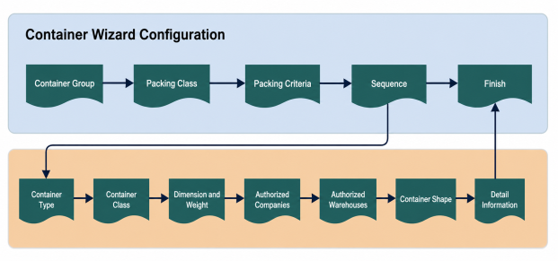

A container group defines all the containers that can be used for packing an item or a group of items. During the container creation wave step, the system processes the details of a container group in sequential order. Once a container group is defined, it must be linked to the appropriate packing class in the Packing Class configuration.

Provide the Container Group and description.
Use the Assign group to Packing class button to open Packing Class and assign the container group to a packing class. This step includes Packing Class, Description, Container Group, and Container Creation Strategy.
Use Packing Criteria to define the criteria used for grouping shipment lines for the selected packing class. This step includes the Packing Criteria and Description values, along with detail rows that define sequence, table field, required, and active settings.
Select the sequence for the record.
The Sequence Field is initially set to 10. You may modify this value, but each detail record must have a unique sequence number.
The sequence number determines when the record will be processed—the lower the number, the earlier it is used.
Typically, the largest container in a group should have the lowest sequence number, ensuring it is used first.
Other containers should be assigned sequence numbers based on their size, with the smallest container receiving the highest sequence number.
Users can add new sequence record. Click Add New Container Type.
Container Type
A container type identifies the type of package that inventory is packed in for shipping. Container types are usually defined by their dimensions. Create a record for each container type that your warehouse uses for packing.
Use the Container Type Field to specify the type of container.
This field determines the container that the system will attempt to use for packing during the container creation wave step.
Create new container type if required.
Use the Container Type Field to identify this record.
Use as Default toggle button: If you use scan and weigh, consider selecting the Default toggle box. If containers are created using scan and weigh and a container type is NOT interfaced to the system, the system will assign the default container type. If you do not use scan and weigh, this field will not have any impact on your processing. Note that you have to deselect this checkbox from a container type before you can assign a different container type as the default. If this checkbox is selected then sets the company authorization to All and disables the All/List option under Company Access.
Use the Container Class Field to associate this container with the appropriate container class. The system uses container classes to organize types for shipping purposes. All container types within a class share common characteristics, such as package category (carton, case, pallet, etc). They also share the same UCC Code.
Use the Rating Symbol Field to identify this container type to Progistics. Progistics will use this value during rating to help calculate the appropriate rates for containers associated with this container type. If you have not defined the container type specifically to TanData, use the value 'Custom'.
Use the FedEx Rating Symbol Field to identify this container to the FedEx rating software. FedEx will use this value during rating to help calculate the appropriate rates for containers associated with this container type.
Enter container types physical dimension in Length, Width and Height fields.
Use the Empty Weight Field to identify what the container's actual weight is with no contents inside of it. During rating, the container's empty weight is included in the rate calculated for a shipment.
Use the Maximum Weight Field to identify how much product the container can hold. During the container creation wave step, the system references this value when it assigns items to containers. This maximum should also include the weight of the empty container as the system includes the container's weight in the total during processing.
Use the Weight Tolerance Field to identify how much of a deviation can exist between a container's actual weight and how much the system believes that it weighs. The system estimates how much a container weighs during the wave and during manual packing. When it closes this container, it checks the actual weight of the container and compares it to the estimate. If there is a weight deviation above or below the tolerance set here, the system displays an alert message. You can override this value or research the weight difference.
Use the Company access tab to assign container types to companies. The container types company authorization is used during close container, nesting, packing, picking into shipping and putaway into shipping container.
Only the authorized container types for a shipment header's company and warehouse will be eligible for use.
If the company is entered in the shipment header, then the company and warehouse authorization is required.
Use the Warehouse access to assign container types to warehouse. The container types warehouse authorization is used during close container, nesting, packing, picking into shipping, and putaway into shipping container.
The authorized container types for a shipment header's company and warehouse will be eligible for usage only when the shipment header's company is blank or filled.
Container Shape
The Container Shape Field specifies the physical shape of the shipping container.
This value is used in the container creation wave process to determine if a container can be downsized.
A container can only be downsized into another container of the same shape as the originally assigned type.
Fill Percent
The Fill Percent Field defines how much of the container's dimensional space is available for items.
Setting it to 100 indicates that the system assumes no additional packing materials, inserts, or non-saleable items are included.